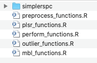
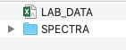

3 Getting Started
The best way to get started using this code, is by downloading the Soil-Predictions-Example folder found here:
Soil-Predictions-Example Folder
This folder, along with all source code for this guide, can be found in the following Github Repository:
whrc/Soil-Predictions-MIR
File Walkthrough
Within the
Soil-Predictions-Examplefolder, you will find the following folders and files:

Double click
Soil-Predictions-Example.Rprojto open up the R-project. Within a project, the working directory is set to the project’s folder.Open up
RUNFILE.Rin the project environment. This is an example script of how to make soil predictions using spectral data. It includes the use of both PLSR models and MBL models, which are both explained in this guide.Navigate to the
Functionsfolder. Within this folder are R files containing functions useful for MIR soil predictions. These files will be sourced by each other, andRUNFILE.R

- Navigate to the
Data_Rawfolder. This should contain:LAB_DATA.csv: A ‘.csv’ file of the lab data; At a minimum, it should have asample_idcolumn and the lab data for a given propertySPECTRA: A folder of OPUS files containing the spectral data for each sample

Required Packages
Open up RUNFILE.R and install the packages listed at the top:
install.packages(stringr) # processing spectra
install.packages(foreach) # processing spectra
install.packages(prospectr) # processing spectral set
install.packages(clhs) # processing large sets {optional}
install.packages(matrixStats) # preprocessing baseline transformation
install.packages(plot3D) # preprocessing plotting spectral outliers {optional}
install.packages(pls) # pls models
install.packages(resemble) # mbl modelssimplerspec
simplerspec documentation
simplerspec is a package that streamlines the process of making models from FT-IR data. However, we were unable to install it and ended up just manually saving the functions read-opus-universal and gather-spc to the folder Functions/simplerspec

stringr
stringr documentation
stringr is used in the processing spectra portion of the code for subsetting strings with the str_sub function
foreach
foreach documentation
foreach is in the processing spectra portion of the code within the simplrspec function read-opus-universal
prospectr
prospectr documentation
prospectr is used in the processing portion of the code to split it into calibration and validation sets using the function kenStone()

clhs
clhs documentation
clhs or Conditional Latin Hypercube Sampling is used in the processing portion of the code to subset large datasets that exceed 15000 samples
matrixStats
matrixStats documentation
matrixStats is used in the base_offset function in the preprocessing portion of the code.
plot3D
plot3D documentation
plot3D is used within the fratio_outliers function to show spectral outliers in 3D principal component space.
pls
pls documentation
pls is used to create partial least squares regression models.
Demo Script
Run the RUNFILE.R script. This will create…
Data_Processed: A folder containing the processed data, used to build the model and make predictions
Models: A folder containing the plsr and mbl models made
Predictions: A folder containing the predictions output by the script and a prediction performance log
To modify for your own spectral library….
- Change the spectral files in
Data_Raw/SPECTRA
- Change the lab data in
Data_Raw/LAB_DATA.csv - Update the name of the property in
RUNFILE.R, to match the column name of the property you would like to predict. Currently, we are predicted for “OC”.
Below is the full RUNFILE.R script, organized with 3 main sections & their corresponding functions, linked below and described in sections 4-7 of this guide.
- Data Preprocessing
- PLSR Models
- MBL Models
#----------------------------------------------#
# Data Preprocessing #
#----------------------------------------------#
source("Functions/preprocess_functions.R")
# Get Spectral Library Set
ALL_data <- getSpecLib(SAVENAME="ALL_data")
# Refine Spectral Library
OC_data <- refineSpecLib(SPECLIB=ALL_data, PROP="OC", CALVAL=TRUE, SAVENAME="OC_data")
# Define Reference and Prediction Sets
refSet <- OC_data[OC_data$calib==1,]
predSet <- OC_data[OC_data$calib==0,]
#----------------------------------------------#
# Partial Least Squares Regression #
#----------------------------------------------#
source("Functions/plsr_functions.R")
source("Functions/perform_functions.R")
# Make Model
plsr.OC <- makePLSModel(PROP="OC", REFNAME="refSet")
# Make Predictions
pls.predictions <- getModResults(PROP="OC", MODTYPE="PLS", MODNAME= "plsr.OC", PREDNAME= "predSet")
#----------------------------------------------#
# Memory Based Learner Model #
#----------------------------------------------#
source("Functions/mbl_functions.R")
source("Functions/perform_functions.R")
# Make Model
mbl.OC <- runMBL(PROP="OC", REFNAME="refSet", PREDNAME="predSet")
# Extract Predictions
mbl.predictions <- getModResults(PROP="OC", MODTYPE="MBL", MODNAME= "mbl.OC", PREDNAME= "predSet")